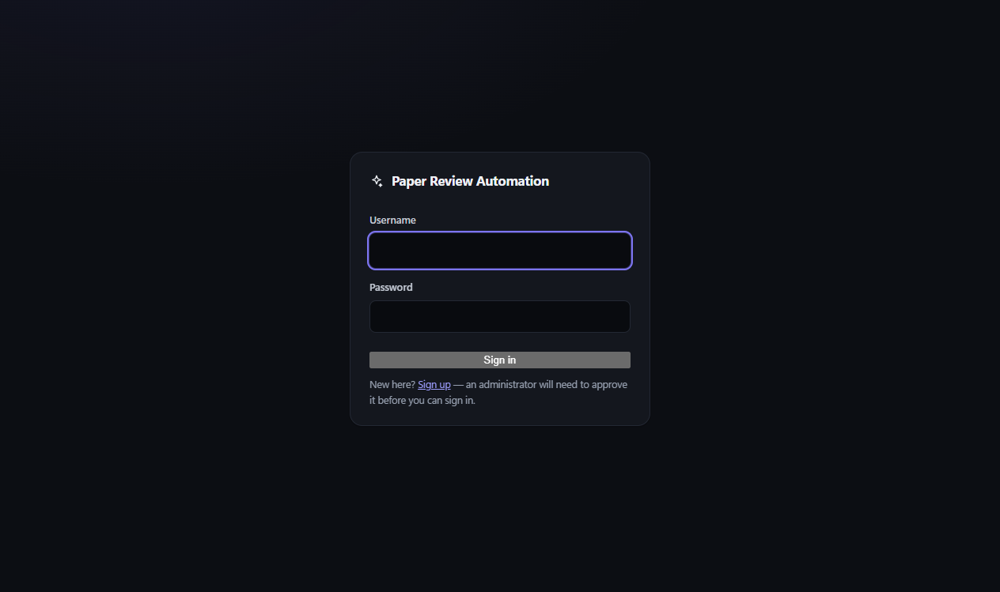
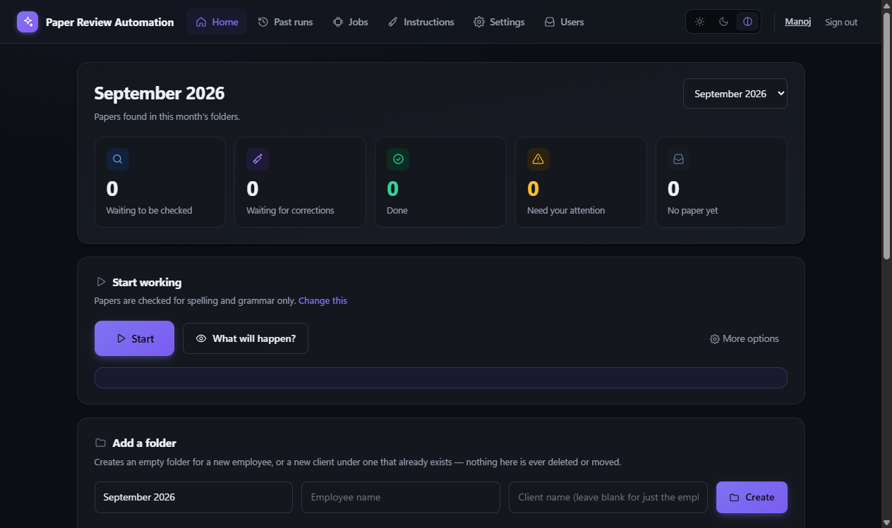

Every morning at 09:00, this pipeline walks every employee's client folders, sends each eligible paper through a Q1-standard review and a scientific revision — driven entirely by the Codex and Claude Code CLIs on your own subscriptions, never an API key. Nobody opens a chat window. It reads and writes files on disk.
A scheduled, file-driven pipeline built around one hard rule: it never deletes, moves, or renames a client's files.
Fires daily via Windows Task Scheduler. Walks every employee and client folder, decides what's eligible, and processes it — no manual trigger needed.
Enforced by an AST-checked test, not just a convention — tests/test_safety.py fails the build if that invariant is ever broken.
Every revision is diffed against the original and flagged for changed metrics, invented numbers, leftover placeholders, or suspicious truncation.
Admins see every employee's papers and settings; Users see only their own — enforced server-side, not just hidden in the UI.
Every paper's timestamp, phase, model, outcome, and any error is recorded in SQLite and queryable directly.
Eligibility is recomputed from disk every run. A crash halfway through just picks back up — it can't double-process a paper.
A system tray icon and one-click desktop shortcut keep the dashboard always reachable, without a console window.
A PyInstaller + Inno Setup build packages five executables under one per-user installer — no Python environment required on the target machine.
Two phases, both driven by CLI subprocesses reaching your Codex and Claude Code subscriptions — never a direct API call.
Walk every employee → client folder for the current month, apply the file-count rules to decide what's eligible.
Converted to markdown, reviewed to a Q1 standard by the Codex CLI, written back as <Client>_review.docx.
Re-scanned from disk, then paper and review are sent to Claude Code, producing Correct_<Client>_paper.docx.
The revision is validated against the original; anything suspicious is flagged REQUIRES_HUMAN_REVIEW, never silently accepted.
The LAN-only control panel — reachable only from your office network, never the public internet.


Both prompts forbid inventing results, datasets, citations, or statistics — and the pipeline checks that, rather than taking the model's word for it.
[TODO], [INSERT RESULT], [ADD CITATION]A disappearing dataset or model name, or a missing expected section, is flagged but doesn't block the file — every flagged paper is recorded REQUIRES_HUMAN_REVIEW, and the file is still written so a human can inspect it directly.
Every restriction is enforced on the server — hiding a button is cosmetic, calling the API directly as a User is refused with a 403.
| Admin | User | |
|---|---|---|
| See papers | Every employee | Own employee only |
| Start a run, change settings/schedule/prompts | Yes | No |
| Approve/reject sign-up requests | Yes | No |
| Open a file on the server | Any paper | Own only |
Both models are reached through the Codex and Claude Code CLI binaries, authenticated with your existing subscriptions — no API keys anywhere.
py -m pip install -r requirements.txt
copy config.example.toml config.toml
# set research_papers_root in config.toml
codex login
claudepy run.py --dry-run # reports decisions, changes nothing
py run.py --test-mode # mock model, checks file naming
py run.py --provider real # one real paper
powershell -File scripts\register_task.ps1 # schedule it